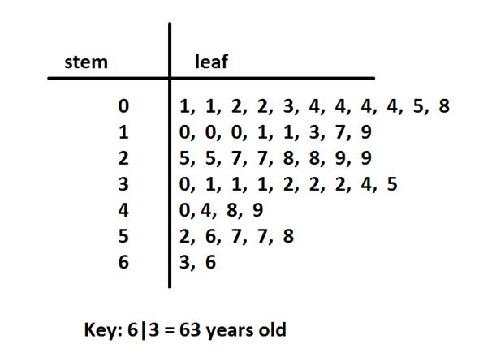
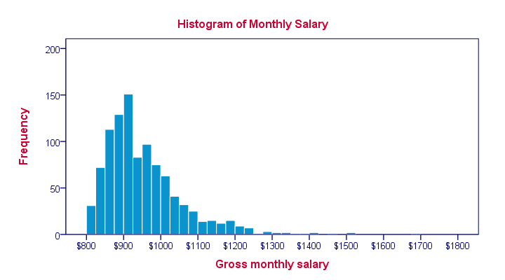
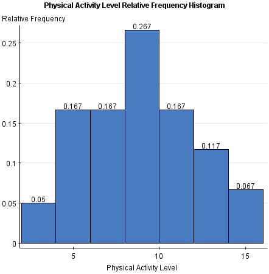
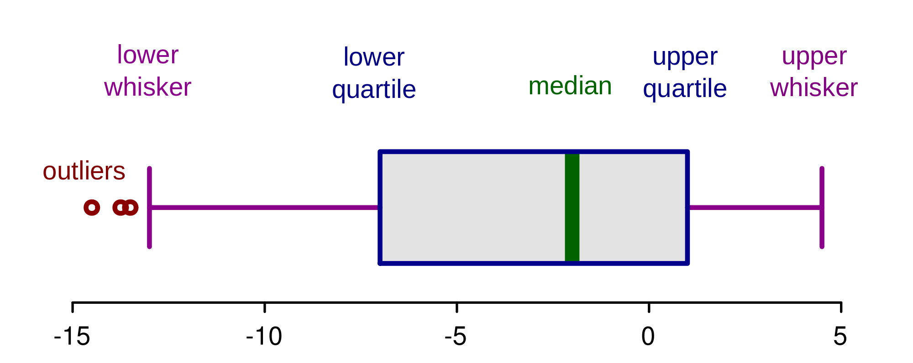
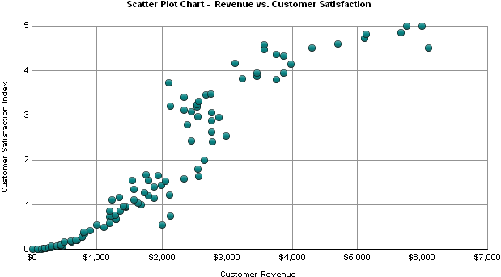

3-sigma-rule. 99% of data are contained in the interval  .
.
This is so called dot plot, it is easy to see the outliers, centrality, and dispersion of the data.

A stem and leaf plot must include a key(or a legend) to tell the meaning of the prefix.
There are two kinds of histograms, one is called the frequency histogram, the other one is called relative frequency histogram. The difference between them is just one has frequency as its vertical axis but the other one has relative frequency(frequency/total number of frequency) as its vertical axis.


It is easy to spot the centrality and dispersion of the data in histograms. And it is easy to use for large amount of data.
Mean is one of the measure of location(”central” of data):
Median is another measure of location(”central” of data):
Range of data:
sample variance:
or written in a easier-to-calculate form:
standard deviation is also a good measure of dispersion of the data:
standard deviation is just the square root of the variance.
3-sigma-rule. 99% of data are contained in the interval .

where lower quantile(so called  ) is the median of the lower
) is the median of the lower  data, and upper
quantile() is the median of upper data.
data, and upper
quantile() is the median of upper data.
This plot is for bivariate statistics. We often use use a scatter plot to find the relationship between two variables.

but remember this, correlation does NOT mean causation.
Covariance of two sets of data , is given by:
and the correlation coefficient is defined by:
the correlation coefficient is between -1 and 1 inclusively. When is close to 1, it means two sets of data show a positively related linear relation; if is close to -1, it means two sets of data show a negatively related linear relation; if is close to 0, it means two sets of date does not show linear relation.
There is another form of this correlation coefficients, but just for easier hand computation: